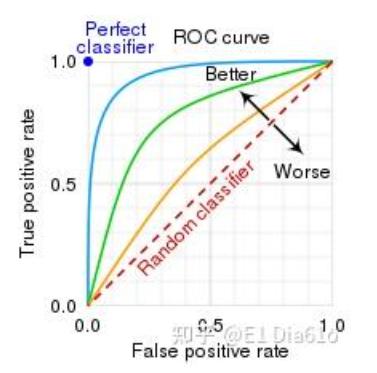

精确率、召回率、准确率、AUC、ROC
四例：第一个字母代表预测是否正确，第二个字母代表预测结果
真正例——TP，真负例——TN，假正例——FP，假负例——FN
精确率、召回率、准确率
**精确率：**预测为正例里面有多少实际也是正例，公式为TP/TP+FP，实际比预测
**召回率：**实际正例有多少被预测正确，公式为TP/TP+FN，预测比实际
**准确率：**所有例子被预测正确的概率，公式为TP+TN/TP+TN+FP+FN
ROC和AUC
**ROC：ROC曲线是一种用于表示分类模型性能的图形工具。它将真阳性率（True Positive Rate，TPR）和假阳性率（False Positive Rate，FPR）**作为横纵坐标来描绘分类器在不同阈值下的性能。

**真阳性率：**即上面的召回率，代表所有实际阳性例中被检测出来的比率（1-漏诊率），越接近1越好

**假阳性率：**所有阴性群体中被检测出来阳性的比率(误诊率)，越接近0越好

**AUC：**AUC（ROC曲线下面积）是ROC曲线下的面积，用于衡量分类器性能。AUC值在0到1之间。越接近1，表示分类器性能越好；反之，AUC越接近0，表示分类器性能越差。
完美的分类器的AUC为1，而随机分类器的AUC为0.5。这是因为完美的分类器将所有的正例和负例完全正确地分类，而随机分类器将正例和负例的分类结果随机分布在ROC曲线上（没有分类能力）。
为什么要用AUC？
如果只用准确率accuracy，当样本类别不平衡时（如95%和5%），总是预测95%的一类，会带来误导，虽然准确率高，但实际上分类器效果并不好，AUC关注的是区分正负类的排序能力，具有更强的鲁棒性。
AUC的优点：
1、不受类别不平衡影响；
2、关注排序能力，即正样本预测概率是否普遍高于负样本，不需要关注具体的决策阈值。
AUC的缺点：
1、信息缺失：只能评估模型的排序能力，无法提供具体预测结果或误差的详细信息；
2、计算复杂度高：非常大的数据集计算ROC曲线会非常复杂；
3、对部分应用场景不敏感：极端情况下AUC很高，但是召回率和精度很差。
计算AUC的方法：
数学意义：AUC是ROC的积分

离散情况下AUC的计算（梯形近似）：

另一种计算方法：

依据定义计算AUC的步骤：
1、排序样本：将测试集中的样本按照模型预测的“正类概率”从高到低排序。
2、统计正负样本对：对正-负样本对，正样本预测概率高于负样本，则记为1个正确对，相等则记为0.5个正确对。
3、计算AUC：AUC的物理意义是随机选择一个正样本和一个负样本，模型对正样本预测概率高于负样本（相对顺序正确）的概率，AUC=正确对数量/总正负样本对数量，总正负样本对数量=正样本数量×负样本数量。
手撕AUC
1 | |